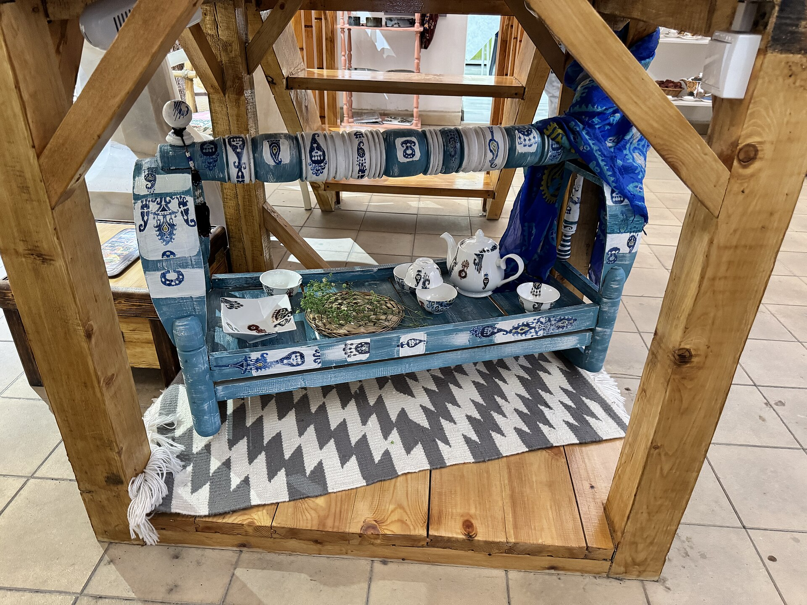

When a baby is born in Islam: adhan, tahnik, naming, aqiqah and circumcision
Islam has several recommended practices when a baby is born: reciting the adhan in the ear, tahnik, naming on the seventh day, aqiqah (a sacrifice), shaving the head and giving its weight in silver as charity, and circumcision. The ruling and emphasis differ between the schools of law. This article presents only verified facts and issues no religious ruling.

In the Islamic tradition there are several religious practices observed when a baby is born. Most are at the level of sunnah or mustahabb (recommended) — meritorious to do but not sinful to omit — while the ruling on some differs between the schools of law. The practices are explained below in order, based only on verified information. This article issues no fatwa or religious judgment (Source: Wikipedia — Aqiqah; IslamQA — What to do when a baby is born).
Reciting the adhan in the ear
According to most scholars, after a baby is born it is recommended (mustahabb) to recite the adhan (call to prayer) into the baby's right ear, so that the first words it hears are the words of tawhid. Some reports add reciting the iqamah into the left ear, but this addition is weaker in terms of hadith and is considered disputed among scholars. The practice of the adhan in the ear rests on narrations in the collections of Abu Dawud and al-Tirmidhi (Source: IslamQA — What to do when a baby is born).
Tahnik — placing a date in the mouth
Tahnik means gently rubbing a softened date (or, if no date is available, something sweet) onto the roof of the newborn's mouth; the word itself comes from the Arabic hanak (palate). This practice is considered mustahabb and has one of the strongest hadith bases of all these acts: it rests on authentic narrations found in the collections of Imam al-Bukhari and Imam Muslim (Source: Wikipedia — Tahnik; IslamQA — What to do when a baby is born).

Naming the child
Giving the child a good name is recommended in the hadith. According to the sources, the name may be given on the first day or on the seventh day — both are permissible and there is no strict obligation. Naming on the seventh day is associated with the narration of Samurah ibn Jundub (Abu Dawud, al-Tirmidhi), in which the aqiqah, the shaving of the head, and the naming are mentioned together on the same day (Source: IslamQA — Rights of children in Islam; Wikipedia — Aqiqah).
Aqiqah — the sacrifice
Aqiqah is the slaughter of a sheep or goat in gratitude for the birth of a child. In most schools (Shafi'i, Hanbali, Maliki) it is regarded as a sunnah/mustahabb. In the Hanafi school, however, Imam Abu Hanifa understood aqiqah not as an emphasized sunnah but as a merely permissible (mubah) act that replaced a pre-Islamic custom — relevant because Uzbekistan and Central Asia follow predominantly the Hanafi tradition (Source: Wikipedia — Aqiqah; IslamQA — Why is Aqiqah important).
According to the well-known majority view, two sheep are slaughtered for a boy and one for a girl; this rests on a narration from Aisha (may God be pleased with her) found in al-Tirmidhi, Abu Dawud, al-Nasa'i and Ibn Majah. Some scholars hold the secondary view that one sheep suffices even for a boy. The aqiqah is usually done on the seventh day — or, if not managed then, on the fourteenth or twenty-first; the meat is shared among family, relatives and the poor (Source: Wikipedia — Aqiqah; IslamQA — Rights of children in Islam).
Shaving the head and the silver charity
Another practice is to shave the newborn's head on the seventh day, weigh the hair, and give its weight in silver (in some reports, gold or silver) to the poor as charity. Giving charity in silver is associated with the report that Fatima (may God be pleased with her) weighed the hair of her children and gave away silver (Source: Wikipedia — Aqiqah; IslamQA — Rights of children in Islam).
Circumcision (khitan)
The circumcision of a male child (khitan) is listed in Islam among the sunan al-fitrah — the practices connected with natural human cleanliness; its basis is not in the Qur'an but in hadith — in the 'fitrah' hadith narrated from Abu Hurayrah (al-Bukhari, Muslim). No fixed age is set in the religious texts: in the Shafi'i tradition the seventh day is often preferred, while in practice it is in many places done when the boy is older, before puberty. The ruling also differs by school — some (including the Shafi'i) treat it as obligatory (wajib/fard), while others (Hanafi, Maliki) often regard it as a sunnah (Source: Wikipedia — Khitan (circumcision); IslamQA — What to do when a baby is born).
Practice in Uzbekistan and Central Asia
In Uzbekistan the aqiqah survives as a sacrifice of gratitude performed when there is the means to do so. Alongside it, the region has cultural customs connected with a newborn — for example the 'beshik toyi' (cradle ceremony): a celebration often held around forty days after birth (in some families on the seventh or ninth day), in which relatives from the mother's side bring a decorated wooden cradle (beshik), baby clothes and sweets, elderly women swaddle the baby for the first time, and lullabies (alla) are sung. A boy's circumcision, in turn, is marked by a separate large celebration called the 'sunnat toyi'. It should be kept in mind that, unlike the religious sunnah, these are cultural traditions (Source: Advantour — Beshik Tui; Wikipedia — Aqiqah).
Why this matters
Knowing the practices connected with a newborn helps diaspora families understand their own traditions correctly and distinguish which act is a religious sunnah and which is a cultural custom. This article relies only on verified sources; it issues no fatwa or judgment on the level of these practices or on which school is 'correct' — on such matters it is advisable to turn to trusted scholars and official religious authorities.